$lm1
Estimate Std. Error t value Pr(>|t|)
(Intercept) 3.0000909 1.1247468 2.667348 0.025734051
x1 0.5000909 0.1179055 4.241455 0.002169629
$lm2
Estimate Std. Error t value Pr(>|t|)
(Intercept) 3.000909 1.1253024 2.666758 0.025758941
x2 0.500000 0.1179637 4.238590 0.002178816
$lm3
Estimate Std. Error t value Pr(>|t|)
(Intercept) 3.0024545 1.1244812 2.670080 0.025619109
x3 0.4997273 0.1178777 4.239372 0.002176305
$lm4
Estimate Std. Error t value Pr(>|t|)
(Intercept) 3.0017273 1.1239211 2.670763 0.025590425
x4 0.4999091 0.1178189 4.243028 0.002164602
Show the code
# Preparing for the plotsop <-par(mfrow =c(2, 2), mar =0.1+c(4,4,1,1), oma =c(0, 0, 2, 0))# Plot charts using for loopfor(i in1:4) { ff[2:3] <-lapply(paste0(c("y","x"), i), as.name)plot(ff, data = anscombe, col ="red", pch =21, bg ="orange", cex =1.2,xlim =c(3, 19), ylim =c(3, 13))abline(mods[[i]], col ="blue")}mtext("Anscombe's 4 Regression data sets", outer =TRUE, cex =1.5)
Show the code
par(op)
Generative Art
Anders Hoff, Plotter drawing (2018)
M. Hansmeyer, Platonic Solids (2011)
Mark J. Stock, Sprawl (2009)
Fall Leaves
Show the code
# Define elements in plant art# Each image corresponds to a different axiom, rules, angle and depth# Leaf of Fallaxiom="X"rules=list("X"="F-[[X]+X]+F[+FX]-X", "F"="FF")angle=22.5depth=6for (i in1:depth) axiom=gsubfn(".", rules, axiom)actions=str_extract_all(axiom, "\\d*\\+|\\d*\\-|F|L|R|\\[|\\]|\\|") %>% unliststatus=data.frame(x=numeric(0), y=numeric(0), alfa=numeric(0))points=data.frame(x1 =0, y1 =0, x2 =NA, y2 =NA, alfa=90, depth=1)# Generating data# Note: may take a minute or twofor (action in actions){if (action=="F") { x=points[1, "x1"]+cos(points[1, "alfa"]*(pi/180)) y=points[1, "y1"]+sin(points[1, "alfa"]*(pi/180)) points[1,"x2"]=x points[1,"y2"]=ydata.frame(x1 = x, y1 = y, x2 =NA, y2 =NA,alfa=points[1, "alfa"],depth=points[1,"depth"]) %>%rbind(points)->points }if (action %in%c("+", "-")){ alfa=points[1, "alfa"] points[1, "alfa"]=eval(parse(text=paste0("alfa",action, angle))) }if(action=="["){data.frame(x=points[1, "x1"], y=points[1, "y1"], alfa=points[1, "alfa"]) %>%rbind(status) -> status points[1, "depth"]=points[1, "depth"]+1 }if(action=="]"){ depth=points[1, "depth"] points[-1,]->pointsdata.frame(x1=status[1, "x"], y1=status[1, "y"], x2=NA, y2=NA,alfa=status[1, "alfa"],depth=depth-1) %>%rbind(points) -> points status[-1,]->status }}ggplot() +geom_segment(aes(x = x1, y = y1, xend = x2, yend = y2),lineend ="round",color="darkslategrey", data=na.omit(points)) +coord_fixed(ratio =1) +theme_void()
Chart Critique
Source: Wilkinson, L. (2005). The Grammar of Graphics (2nd ed., p. 130). Springer. https://doi.org10.1007/0-387-28695-0
I find this graph is easy to understand while still being unique. Three-dimensional visualizations offer more information than their two-dimensional counterparts, but are convoluted and take a long time to process.
Traditional choropleth maps have caveats. They typically require a legend, and the degree of change between each color is arbitrary. In this case the upper facet of the graph acts as a key for the lower, as well as clarifies the degree of change that exists between each color.The lower facet anchors the upper facet in space, allowing for quick insights that would not be possible without strong familiarity with the longitude and latitude of the United States.
Furthermore, this visualizations allows users to extract data at varying degrees of specificity. We can quickly see that California has less variation than the rest of the United States using the bottom facet, but could look further into variations within the state using the upper. This makes the visualization useful for a wide variety of users.
Assignment 3
1. Murrell Explaination
Show the code
# Piechart w/ explaination ## Create Dataset ##par(mar=c(0, 2, 1, 2), xpd=FALSE, cex=0.5)## Add list of pie sale valuespie.sales <-c(0.12, 0.3, 0.26, 0.16, 0.04, 0.12)## Create Category Namesnames(pie.sales) <-c("Blueberry", "Cherry","Apple", "Boston Cream", "Other", "Vanilla")## Generate Graph ##pie(pie.sales, col =gray(seq(0.3,1.0,length=6)))
$lm1
Estimate Std. Error t value Pr(>|t|)
(Intercept) 3.0000909 1.1247468 2.667348 0.025734051
x1 0.5000909 0.1179055 4.241455 0.002169629
$lm2
Estimate Std. Error t value Pr(>|t|)
(Intercept) 3.000909 1.1253024 2.666758 0.025758941
x2 0.500000 0.1179637 4.238590 0.002178816
$lm3
Estimate Std. Error t value Pr(>|t|)
(Intercept) 3.0024545 1.1244812 2.670080 0.025619109
x3 0.4997273 0.1178777 4.239372 0.002176305
$lm4
Estimate Std. Error t value Pr(>|t|)
(Intercept) 3.0017273 1.1239211 2.670763 0.025590425
x4 0.4999091 0.1178189 4.243028 0.002164602
Show the code
# Preparing for the plotsop <-par(mfrow =c(2, 2), mar =0.1+c(4,4,1,1), oma =c(0, 0, 2, 0))# Plot charts using for loopfor(i in1:4) { ff[2:3] <-lapply(paste0(c("y","x"), i), as.name)plot(ff, data = anscombe, col ="red", pch =21, bg ="orange", cex =1.2,xlim =c(3, 19), ylim =c(3, 13))abline(mods[[i]], col ="blue")}mtext("Anscombe's 4 Regression data sets", outer =TRUE, cex =1.5)
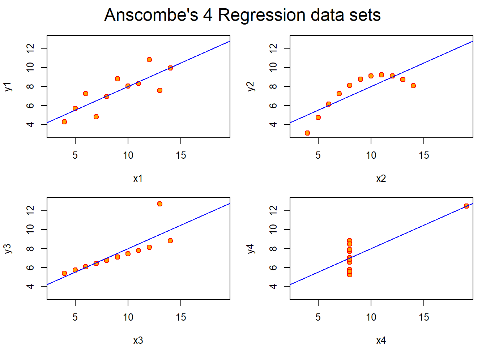
Show the code
par(op)
3. Anscombe Variations
Show the code
plot(anscombe$x1,anscombe$y1, family="serif")
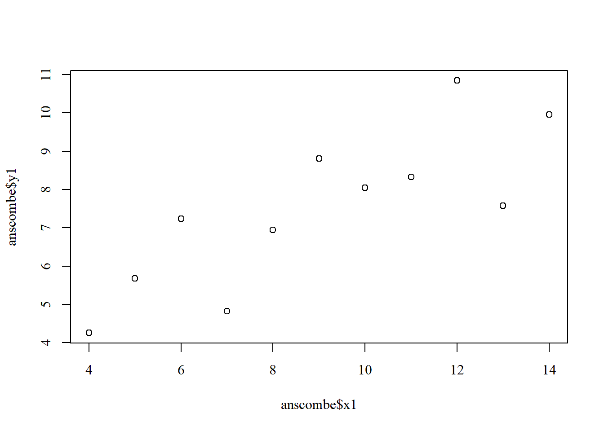
Show the code
plot(anscombe$x1,anscombe$y1, col="red")
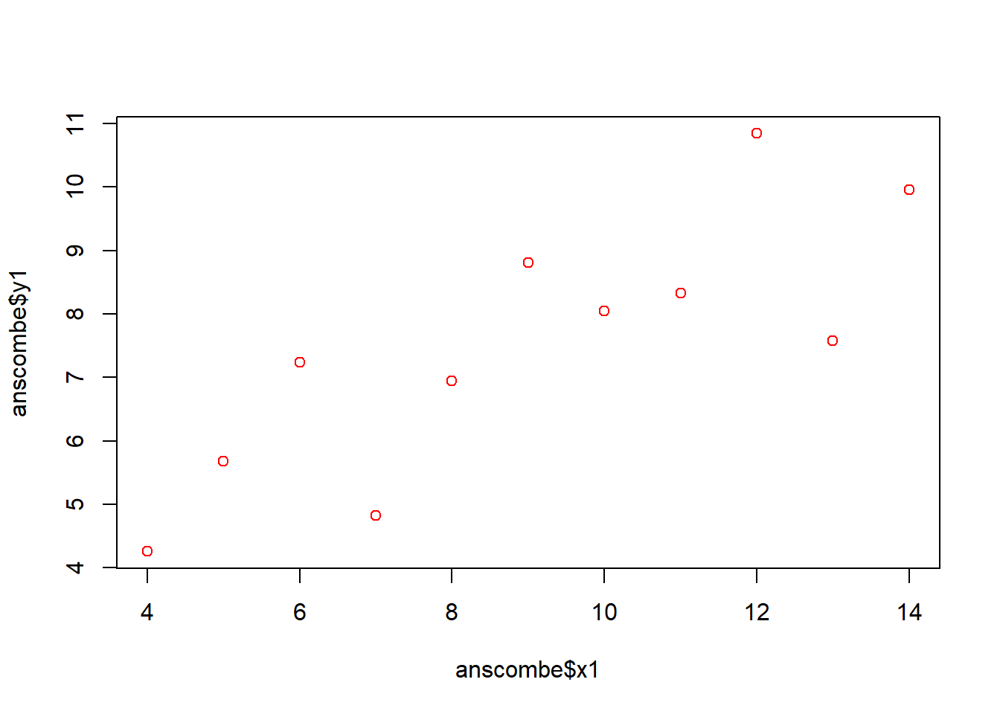
Show the code
plot(anscombe$x1,anscombe$y1, pch=20)
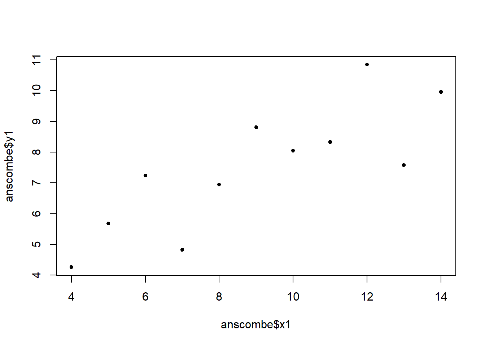
:::
Assignment 4
Chart 1
Show the code
ggplot(rounded, aes(x =reorder(clarity,avg_size), y = avg_price_per_carat, fill = clarity, width = avg_size)) +geom_col() +scale_fill_brewer(palette ="Set1") +scale_y_continuous(labels = comma, limits =c(0, 5000)) +theme_minimal() +labs(title ="Average Diamond Size and Price per Carat by Clarity",x ="Average Size (carats)",y ="Average Price per Carat ($)",fill ="Clarity" )
Warning: `position_stack()` requires non-overlapping x intervals.
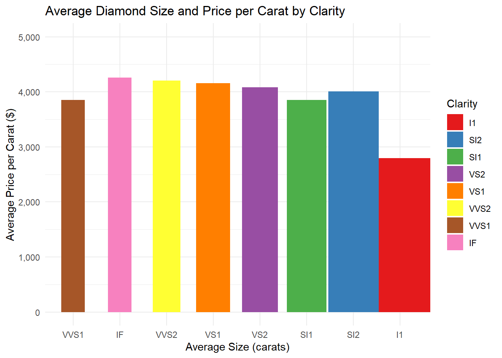
Chart 2
Show the code
# color palettepalette_cut <-brewer.pal(n =5, name ="Dark2") # 5 colors for 'cut'# Histogramhist_plot <-ggplot(diamonds, aes(x = price)) +geom_histogram(aes(y =after_stat(density)), bins =30, fill ="gray80", color ="black") +stat_function(fun = dnorm, args =list(mean =mean(diamonds$price), sd =sd(diamonds$price)), color ="blue", size =1) +labs(title ="Histogram of Diamond Prices", x ="Price", y ="Density") +theme_minimal(base_size =5)
Warning: Using `size` aesthetic for lines was deprecated in ggplot2 3.4.0.
ℹ Please use `linewidth` instead.
Show the code
# Bar Plotbar_plot <- diamonds %>%group_by(cut) %>%summarise(count =n()) %>%ggplot(aes(x = cut, y = count, fill = cut)) +geom_bar(stat ="identity") +labs(title ="Bar Plot: Count of Diamonds by Cut", x ="Cut", y ="Count") +scale_fill_manual(values = palette_cut) +theme_minimal(base_size =5)# Box Plotbox_plot <-ggplot(diamonds, aes(x = cut, y = price, fill = cut)) +geom_boxplot() +labs(title ="Box Plot: Price Distribution by Cut", x ="Cut", y ="Price") +scale_fill_manual(values = palette_cut) +theme_minimal(base_size =5)# Scatter Plotfacet_scatter <-ggplot(diamonds, aes(x = carat, y = price, color = color)) +geom_point(alpha =0.5, size =2) +facet_wrap(~ cut) +labs(title ="Faceted Scatter Plot: Carat vs Price by Color", x ="Carat", y ="Price") +scale_color_brewer(palette ="Set1") +theme_minimal(base_size =5)# Heatmapheatmap_data <- diamonds %>%group_by(cut, color) %>%summarise(avg_price =mean(price), .groups ="drop") # Avoid warningheatmap <-ggplot(heatmap_data, aes(x = cut, y = color, fill = avg_price)) +geom_tile(color ="white") +scale_fill_gradient(low ="lightblue", high ="darkblue") +labs(title ="Heatmap: Average Price by Cut and Color", x ="Cut", y ="Color") +theme_minimal(base_size =5)# Pie Chartpie_data <- diamonds %>%group_by(cut) %>%summarise(count =n()) %>%mutate(percentage = count /sum(count))pie_chart <-ggplot(pie_data, aes(x ="", y = percentage, fill = cut)) +geom_bar(stat ="identity", width =1) +coord_polar(theta ="y") +labs(title ="Pie Chart of Diamond Cuts") +scale_fill_brewer(palette ="Dark2") +theme_void(base_size =5)# Arrange all plots in a 2x3 grid layoutgrid.arrange( hist_plot, bar_plot, box_plot, facet_scatter, heatmap, pie_chart,ncol =2# Arranging in two columns for 2x3 layout)
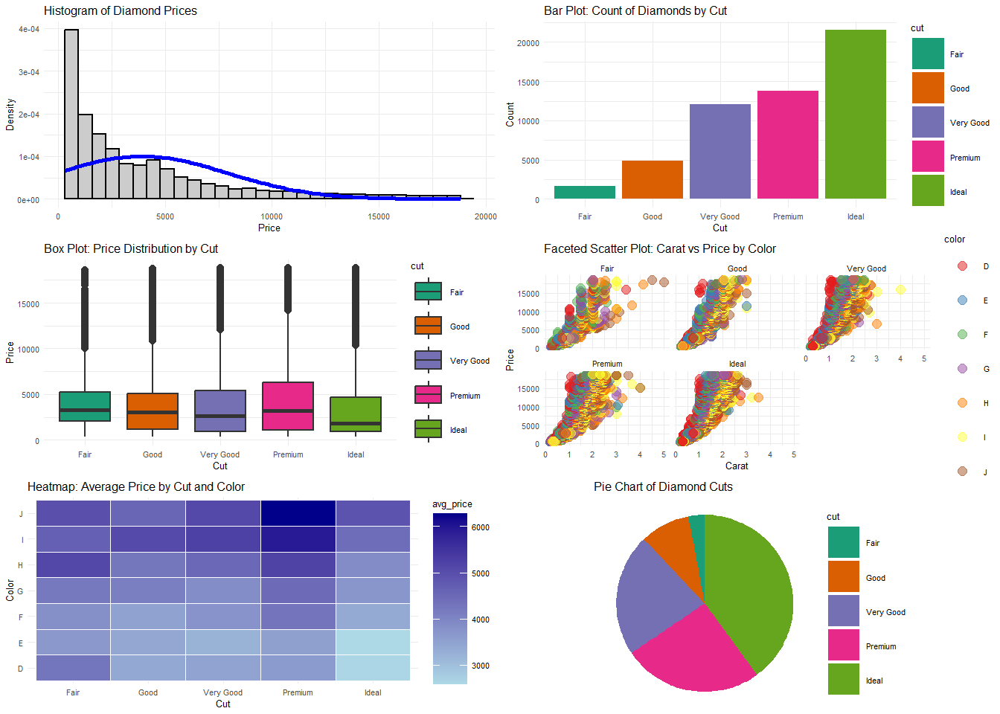
Chart 3
Show the code
# Define a sequential palette from RColorBrewer packageblues_palette <-brewer.pal(9, "Blues")custom_palette <- blues_palette[5:9] # select particular colors# Create the horizontal bar chart with facetsggplot(data = diamonds, aes(x = clarity, fill = cut)) +geom_bar(color ="black") +facet_wrap(~ cut, nrow =1) +scale_y_continuous(labels =label_number(scale =1/1000, suffix ="K")) +coord_flip() +scale_fill_manual(values = custom_palette) +theme_minimal(base_family ="sans") +labs(title ="Number of Diamonds by Clarity Across Cut Levels",x ="Clarity",y ="Number of Diamonds",fill ="Cut" ) +theme(plot.title =element_text(hjust =0.5, face ="bold", size =14),axis.text.y =element_text(size =8),axis.text.x =element_text(size =8),strip.text =element_text(size =11),legend.position ="none",text =element_text(family ="sans") )
Chart 4 (paired)
Show the code
# Filter the dataset for the required cutsfiltered_diamonds <-subset(diamonds, cut %in%c("Very Good", "Ideal"))# Create the plot## The key issue was to make the left bars overlap over/on top of the rigt!ggplot(filtered_diamonds, aes(x = color)) +geom_bar(data =subset(filtered_diamonds, cut =="Ideal"), aes(y =after_stat(count), fill = cut), position =position_nudge(x =0.15), width =0.5, alpha =0.7) +# Right bars (Ideal)geom_bar(data =subset(filtered_diamonds, cut =="Very Good"), aes(y =after_stat(count), fill = cut), width =0.5) +# Left bars (Very Good) on topscale_y_continuous(labels = scales::unit_format(unit ="k", scale =1e-3)) +# Format y-axis labelslabs(title ="Number of Diamonds by Color across Selected Cut Quality Levels",x ="Color",y ="Number of Diamonds",fill ="Selected Cut Quality Levels" ) +scale_fill_manual(values =c("Very Good"="#66c2a5", "Ideal"="#fc8d62")) +# Custom colorstheme_minimal(base_family ="sans") +theme(plot.title =element_text(face ="bold", size =14, hjust =0.5), # Centered, bold, and larger titleaxis.text.y =element_text(size =10), # Adjust y-axis text size if neededlegend.position ="top"# Adjust legend position if needed )
font_add_google("Poppins", "poppins")showtext_auto()# Base R Histogrampar(mfrow =c(1, 1), col.main ="black", col.lab ="black", col.axis ="darkgrey", mar =c(5, 4, 4, 2))hist(mtcars$mpg, main ="Distribution of Miles Per Gallon (mpg)", xlab ="Miles Per Gallon", col ="slateblue", border ="slateblue4", breaks =10)
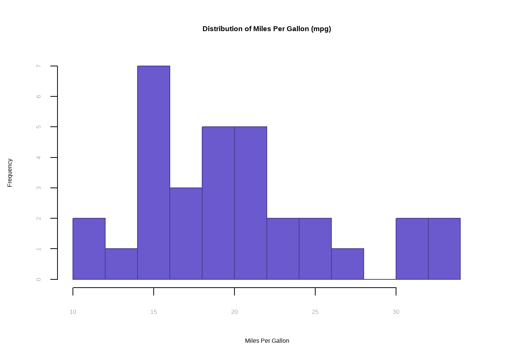
Show the code
# Base R Vertical Bar Chartcar_count <-table(mtcars$cyl)barplot(car_count, main ="Number of Cars by Cylinder Count", xlab ="Number of Cylinders", ylab ="Count of Cars", col ="lightgreen", border ="darkgreen")
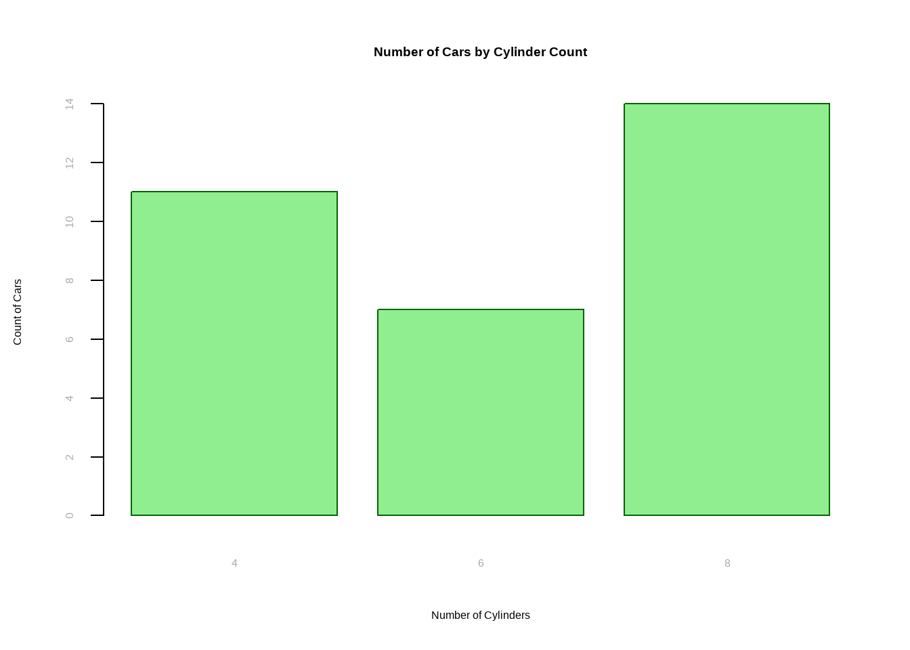
Show the code
# Base R Horizontal Bar Chartbarplot(car_count, main ="Number of Cars by Cylinder Count", xlab ="Count of Cars", ylab ="Number of Cylinders", col ="violetred", border ="darkred", horiz =TRUE)
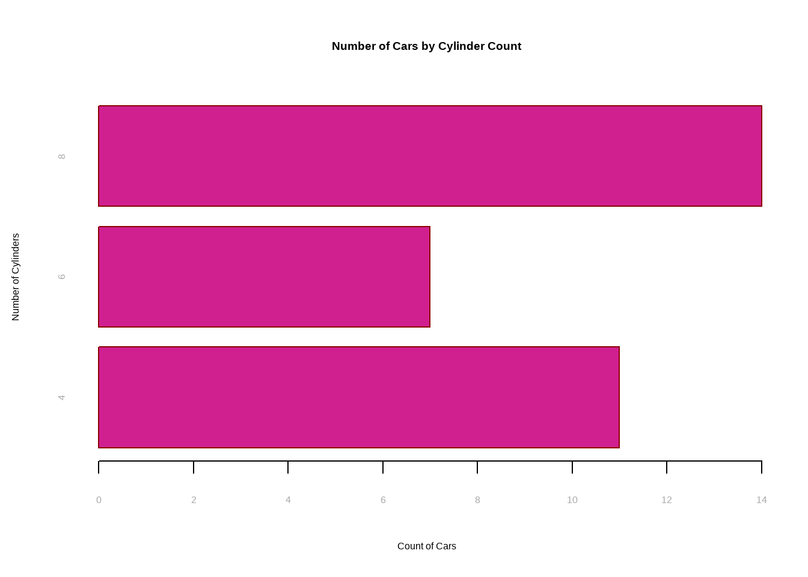
Show the code
# Base R Pie Chartpie(car_count, main ="Proportion of Cars by Cylinder Count", col =c("slateblue", "violetred", "lightgreen"))
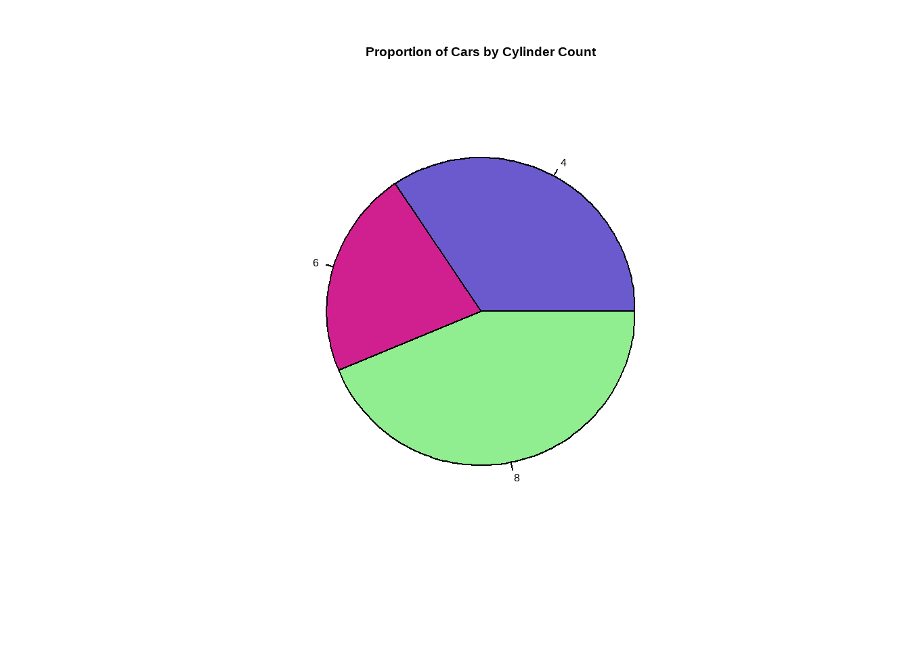
Show the code
# Base R Boxplotboxplot(mpg ~ cyl, data = mtcars, main ="Boxplot of MPG by Cylinder Count", xlab ="Number of Cylinders", ylab ="Miles Per Gallon", col =c("slateblue", "violetred", "lightgreen"), border ="black")
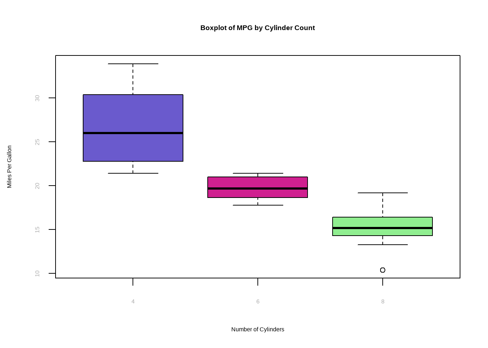
Show the code
plot(mtcars$wt, mtcars$mpg, main ="Scatterplot of MPG vs Weight", xlab ="Weight (1000 lbs)", ylab ="Miles Per Gallon", pch =16, col ="violetred")
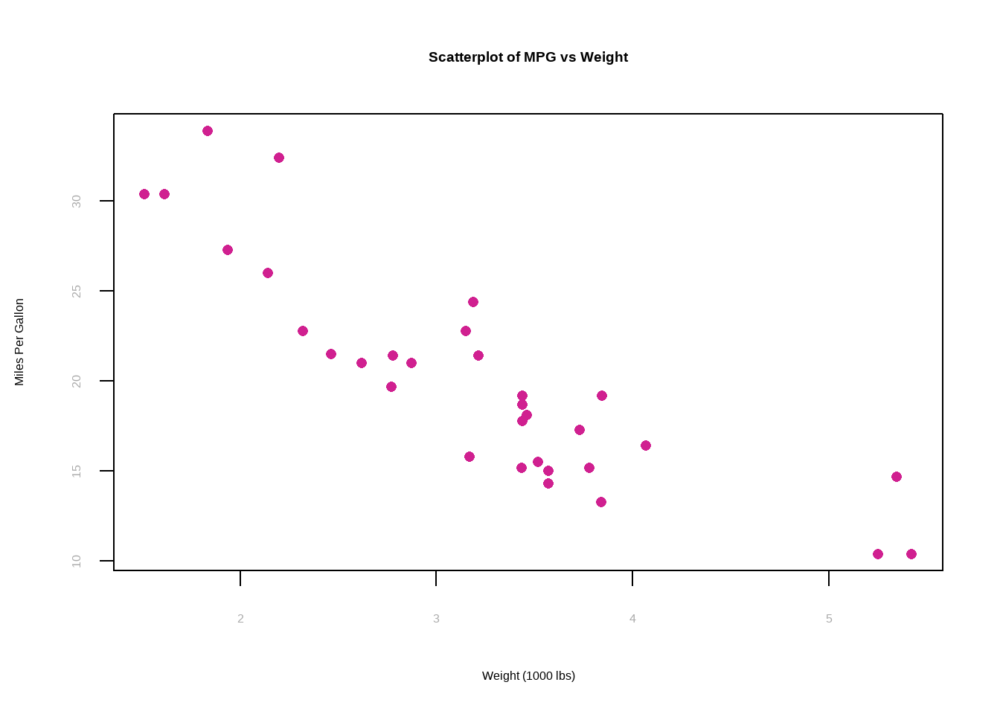
GGplots
Show the code
library(sysfonts)font_add_google("Poppins", "poppins")my_theme <-theme(text =element_text(family ="poppins"), plot.title =element_text(color ="grey29", size =16, face ="bold"),axis.title =element_text(color ="grey29", size =14),axis.text =element_text(color ="grey29", size =12),panel.background =element_rect(fill ="white", color =NA), plot.background =element_rect(fill ="white", color =NA), panel.grid.major =element_line(color ="grey90"), panel.grid.minor =element_line(color ="grey95"), panel.border =element_rect(color ="black", fill =NA), legend.background =element_rect(fill ="white", color =NA) )ggplot(mtcars, aes(x = mpg)) +geom_histogram(binwidth =2, fill ="slateblue", color ="slateblue4") +labs(title ="Distribution of Miles Per Gallon (mpg)", x ="Miles Per Gallon", y ="Count") + my_theme
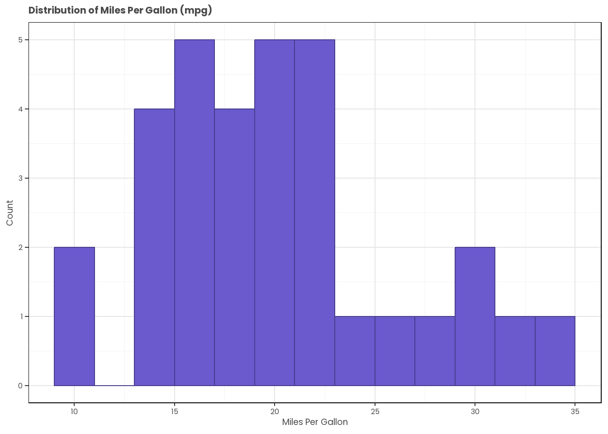
Show the code
##### i. Vertical Bar Chartggplot(mtcars, aes(x =factor(cyl))) +geom_bar(fill ="slateblue", color ="slateblue4") +labs(title ="Number of Cars by Cylinder Count", x ="Number of Cylinders", y ="Count of Cars") + my_theme
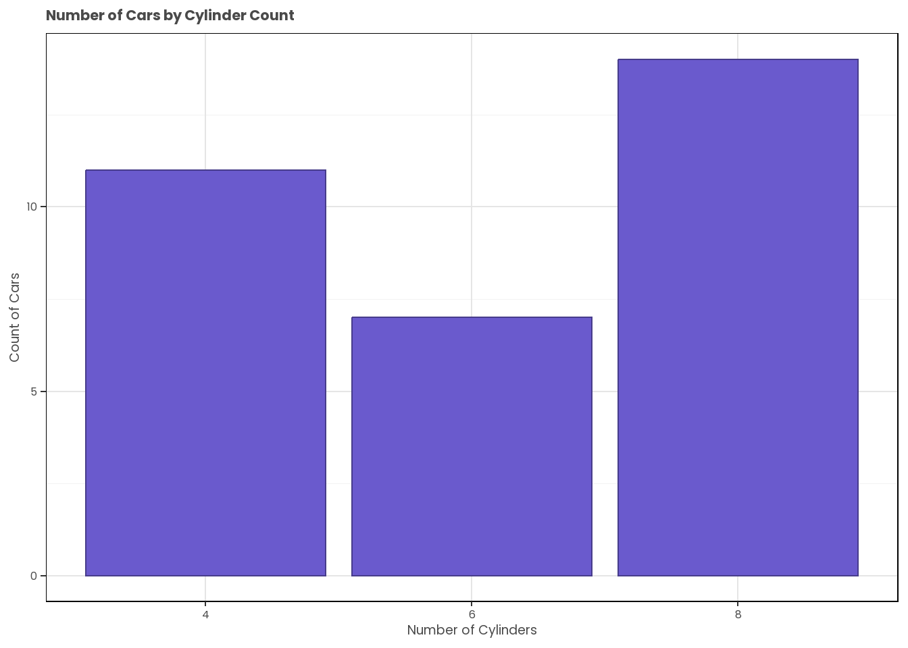
Show the code
##### ii. Horizontal Bar Chartggplot(mtcars, aes(x =factor(cyl))) +geom_bar(fill ="violetred", color ="darkred") +coord_flip() +labs(title ="Number of Cars by Cylinder Count", x ="Count of Cars", y ="Number of Cylinders") + my_theme
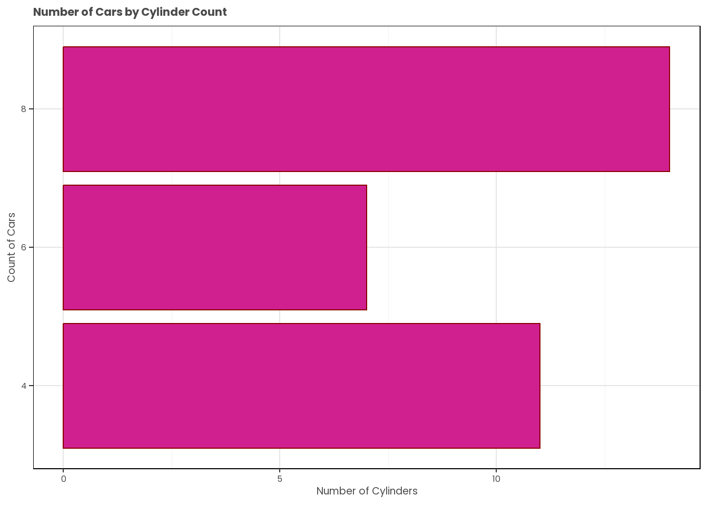
Show the code
#### c. Pie Chartcar_count_df <-as.data.frame(car_count)ggplot(car_count_df, aes(x ="", y = Freq, fill = Var1)) +geom_bar(stat ="identity", width =1, color ="white") +coord_polar("y", start =0) +labs(title ="Proportion of Cars by Cylinder Count") +scale_fill_manual(values =c("slateblue", "violetred", "lightgreen")) + my_theme
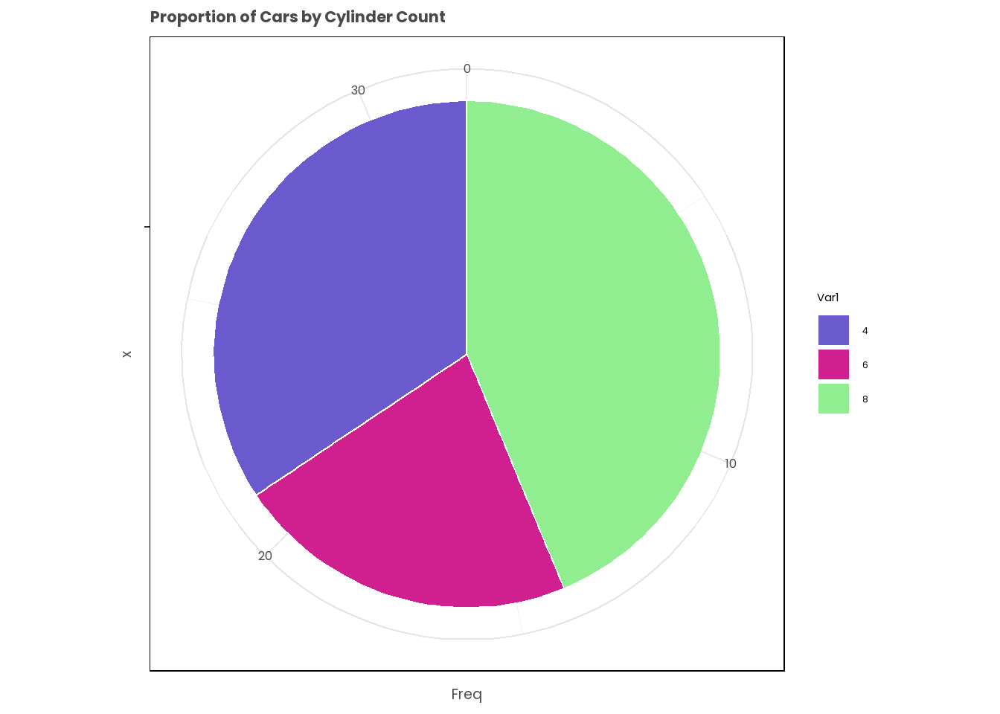
Show the code
#### d. Boxplotggplot(mtcars, aes(x =factor(cyl), y = mpg, fill =factor(cyl))) +geom_boxplot(color ="grey29") +labs(title ="Boxplot of MPG by Cylinder Count", x ="Number of Cylinders", y ="Miles Per Gallon") +scale_fill_manual(values =c("violetred", "slateblue", "lightgreen")) + my_theme
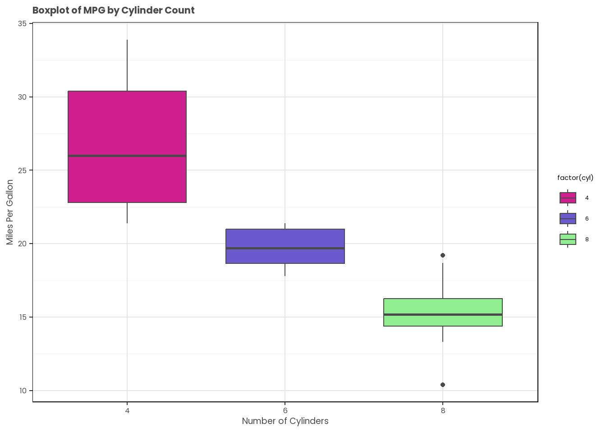
Show the code
#### e. Scatterplotggplot(mtcars, aes(x = wt, y = mpg)) +geom_point(color ="slateblue", size =3) +labs(title ="Scatterplot of MPG vs Weight", x ="Weight (1000 lbs)", y ="Miles Per Gallon") + my_theme